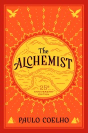

The Alchemist
The Alchemist is Paulo Coelho’s most famous work. Originally published in Portuguese in 1988, it has become an international bestseller and has been translated into over 80 languages. The book tells the story of Santiago, a shepherd boy, who embarks on a journey to find his personal legend, teaching readers about following their dreams, self-discovery, and the importance of perseverance.
Brida
Brida is a novel about a young Irish girl on a spiritual journey of self-discovery. Coelho combines elements of magic and spirituality to create a compelling narrative about fate, destiny, and love. It explores themes of personal growth, the importance of following one’s heart, and understanding one's true calling in life.
Eleven Minutes
Eleven Minutes is a bold and provocative novel that follows Maria, a young Brazilian woman who moves to Switzerland and becomes a prostitute. Through her journey in the world’s oldest profession, Maria embarks on a path of self-discovery, questioning her initial view of sex as a mere transaction and exploring the complexities of love, desire, and emotional connection. As she grapples with the difference between physical pleasure and intimacy, the novel delves into themes of empowerment, vulnerability, and the search for personal liberation, ultimately illustrating the transformative power of understanding and accepting one's own desires.

Veronika Decides to Die
Veronika Decides to Die is a novel that explores the themes of mental health, existentialism, and the search for meaning in life. It follows Veronika, a young woman who attempts suicide and ends up in a mental institution, where she begins to question the values of society and the true meaning of freedom. Coelho’s philosophical narrative challenges the concept of normalcy and invites readers to reflect on their own lives and what it means to be truly alive.

The Devil and Miss Prym
The Devil and Miss Prym tells the story of a small town that is confronted with the arrival of a stranger who offers them a dark proposition. The novel delves into the duality of human nature, exploring the battle between good and evil, the temptation of sin, and the power of choice. Coelho uses this story to explore moral dilemmas, the complexity of human decisions, and the importance of personal responsibility.